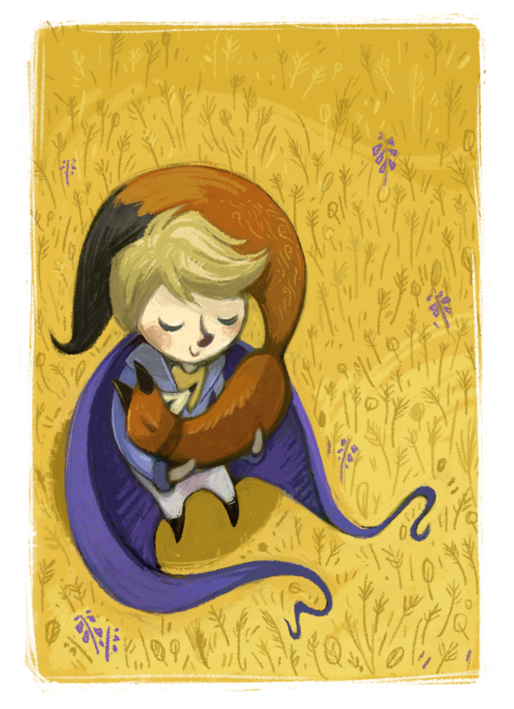
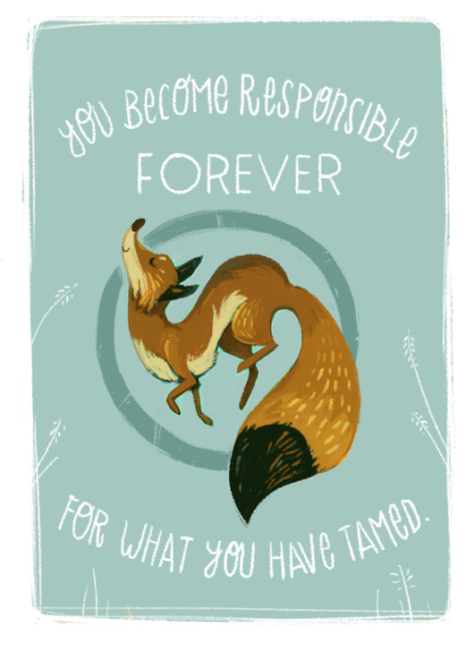
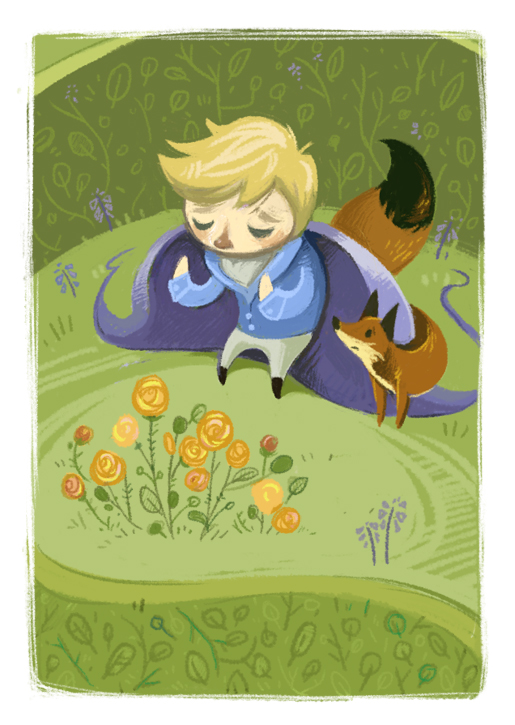

Janice Rosenthal
Illustrator>Designer
projects
illustrations
sketchbook
contact
The Little Prince
Tryptic inspired by one of my most favorite books, "The Little Prince", by Antoine de Saint-Exupery.
  